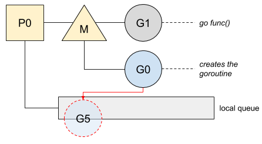

Go: Goroutine 的启动和退出
ℹ️ 本文基于 Go 1.14
在 Go 中, 我们可以把 Goroutine 简单理解为一个 Go 的结构体, 这个结构体包含一些运行程序信息, 比如栈信息, 程序计数器, 或者当前的 OS 线程信息. Go 调度器负责根据这些运行程序信息, 已为当前 Goroutine 分配运行时. 除此之外, Go 调度器还需要格外留心 Goroutine 的启动和退出处理.
这篇文章, 我们来了解一下调度器是如何处理 Goroutine 的启动和退出.
如果需要了解更多关于运行程序的栈和程序计数器的信息, 请参考我的另一篇文章 "Go: Goroutine 切换操作".
启动
启动 Goroutine 操作相对简单. 下面我们看一个例子:
func main() {
var wg sync.WaitGroup
wg.Add(1)
go func() {
println("goroutine is running...")
wg.Done()
}()
println("mian is running...")
wg.Wait()
}
这段代码中, main 函数在打印信息之前启动了一个 Goroutine. 我们知道, 每个Goroutine 都有自己的运行时间, 所以 Go 会通知运行时新建一个 Goroutine, 此时 Go 会:
- 创建栈.
- 收集信息, 这些信息是关于当前程序计数器或当前调用方数据.
- 更新 Goroutine 内部数据, 如更新当前 Goroutine 的 ID 或状态.
完成上述操作之后, 这个 Goroutine 不会立即获得运行时. 这个新建的 Goroutine 会入队到本地队列的列头, 等待下一轮 Go 调度器调度. 至此, 我们得到如下图所示的 Goroutine 状态:

把这个新建的 Goroutine 放到最前面, 这样这个 Goroutine 就可以在下一次调度时候第一个被执行. 当被分配到运行时后, 这个 Goroutine 会在当前线程运行, 也有可能在另外一个线程上(这种情况一般发生在调度器工作窃取被触发时).
想了解更多调度器工作窃取相关的机制, 请参考 "Go: 调度器的任务窃取 (Work-Stealing)".
为了让大家更了解 Goroutine 启动过程, 我们从汇编指令角度来看看发生了什么:
一旦 Goroutine 被启动并被入队到本地队列, 就开始继续执行main 中的后续的指令.
退出
当 Goroutine 执行结束时, 基于节约 CPU 资源考虑, Go 会继续调度另一个 Goroutine. 同时, 当前的 Goroutine 也会被保留以便后续复用.
关于 Goroutine的复用机制, 请参考 Go: How Does Go Recycle Goroutines?
下面我们来看一下 Gorouine 的退出的具体实现原理. 首先, Go 是如何意识到 Goroutine 结束的呢?
Goroutine 创建之初 (具体是在设置程序计数器指向 Goroutine 真实执行函数之前), Go 就会在其操作栈里面加入一个名为 goexit 的函数. 通过这种方式, Go 就可以保证在 Goroutine 的真实执行函数全部执行完毕之后, goexit 函数一定会被调用. 我们还是通过一段简单的程序来理解这个过程:
func main(){
var wg sync.WaitGroup
wg.Add(1)
go func(){
var skip int
for {
_, file, line, ok := runtime.Caller(skip)
if !ok {
break
}
fmt.Println("%s:%d\n", file, line)
skip++
}
wg.Done()
}()
wg.Wait()
}
通过程序输出, 我们对信息进行栈的追踪:
/path/to/src/main.go:16
/usr/local/go/src/runtime/asm_amd64.s:1373
从asm_amd64 汇编文件中, 我们看到goexit函数:
这不操作之后, Go 就会切换到 g0 , 继续调度其他 Goroutine.
我们也可以通过显示调用 runtime.Goexit()来手动之中当前 Goroutine:
func main() {
var wg sync.WaitGroup
wg.Add(1)
go func() {
defer wg.Done()
runtime.Goexit() // goroutine exits here
println("never executed")
}()
wg.Wait()
}
这段代码中, defer 中的函数会被先执行. 之后会执行所有 goexit之前所有的代码, 然后退出.
via: https://medium.com/a-journey-with-go/go-how-does-a-goroutine-start-and-exit-2b3303890452
译者: SarahC